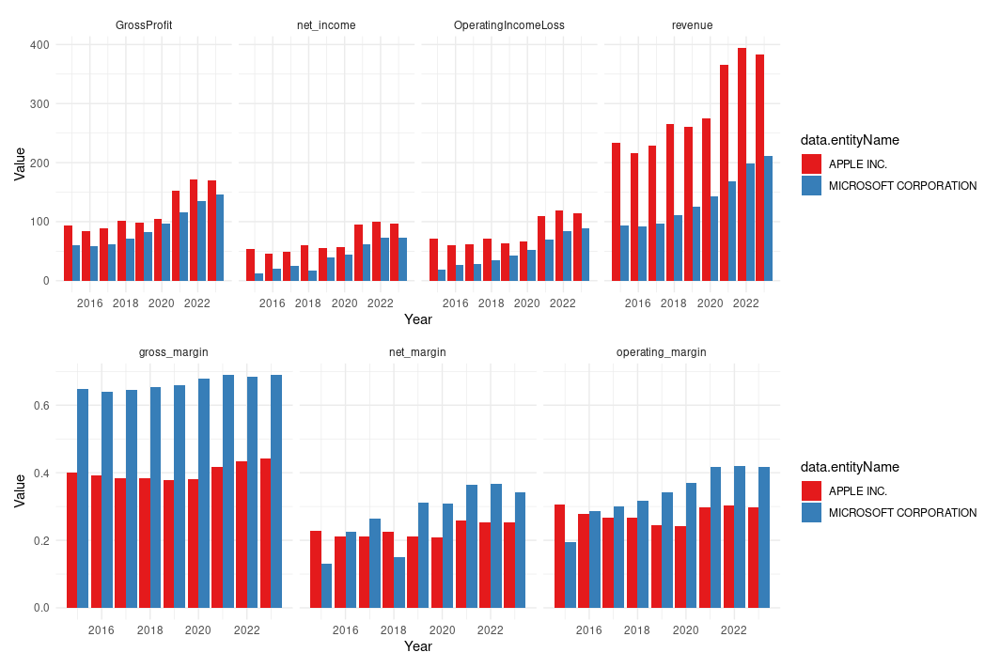

tidyedgar is an R package designed to simplify acquiring and transforming fundamental financial data from the EDGAR database. Leveraging the official S.E.C. API, TidyEDGAR outputs data in a clean, ‘tidy’ format ideal for financial analysis and stock screening based on fundamental data.
Features
- Ease of Use: Automates the retrieval and preprocessing of financial data.
- Tidy Format: Structures data in a convenient format for analysis.
- Comprehensive Coverage: Access data across all U.S. public companies.
- Versatile Analysis: Suitable for fundamental analysis and stock screening.
Installation
Install TidyEDGAR using:
install.packages("tidyedgar")Or to get the development version:
devtools::install_github("gerardgimenezadsuar/tidyedgar")Usage
Call the following function to get a comprehensive fundamental analysis dataframe:
df <- yearly_data(years = 2015:2023)This will get you the following financials for ALL companies in EDGAR:

And easily you can create plots like this:

The previous example showcased the main wrapper function. However, there are many options to customize the data retrieval and processing.
Fetching the latest (2020-2023) yearly financial data, of certain account names:
net_income <- get_ydata(account = "NetIncomeLoss")
revenue <- get_ydata(account = "Revenues")
op_income <- get_ydata(account = "OperatingIncomeLoss")Transforming and analyze the data with additional metrics such as net margin and year-over-year changes:
yearly <- prepare_data(revenue, net_income, op_income, quarterly = F)Do you need quarterly data? You can use:
get_qdata()In combination with:
prepare_data(df, quarterly = TRUE)For suggestions/bug reporting, feel free to reach out at gerard@solucionsdedades.cat